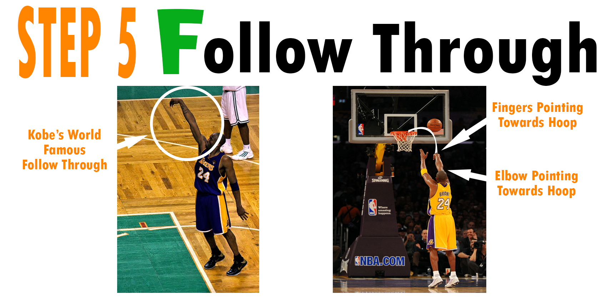
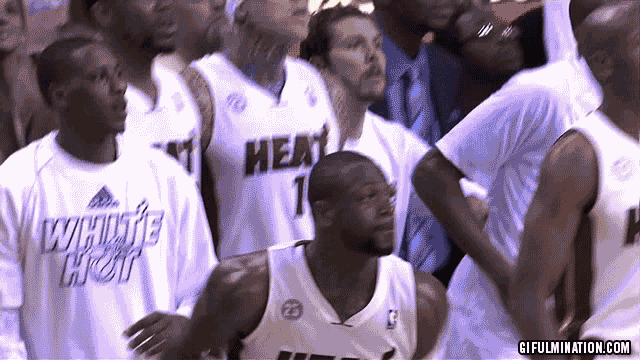

Welcome to JP Roque's tutorial for improving your free throw technique using B.E.E.F.
IT ONLY TAKES SIMPLE STEPS!!!

Click on the image to start making free throws!
-
Step 1 is very simple. All you need is to find the two objects needs to shoot a free throw: a basketball and a basketball hoop.
-
The next 4 steps are VERY important. Step 2 (the "B" in B.E.E.F.) ensures your body is well-positioned and well-balanced throughout your whole shot. This is step helps prevent your shot from moving left or right, instead of straight.
-
Step 3 (the first "E" in B.E.E.F.) is very simple, but it's what many players struggle with. It takes a lot of practice and repetition to get it perfect ("Practice makes Perfect"). You simply need to make sure that the elbow of your SHOOTING arm is aligned with your knee. This significantly improves the accuracy of your shot.
-
Step 4 (the second "E" in B.E.E.F.) follows a simple concept: the ball will go wherever your eyes are looking. By focusing your eyes on the front of the rim, your chances of making the shot increase because the ball is less likely to bounce off the back of the rim or incorrectly off the backboard.
-

Step 5 (the "F" in B.E.E.F.) is the most iconic step in all of shooting: the Follow Through. This step, just as steps 3 & 4, improves the accuracy of your shot because you're directing the ball to where your fingers and elbow are pointing.
*the crowd when you make that perfect, game-winning free throw*
 Thanks for visiting my tutorial today!
REMEMBER: "Practice makes Perfect"